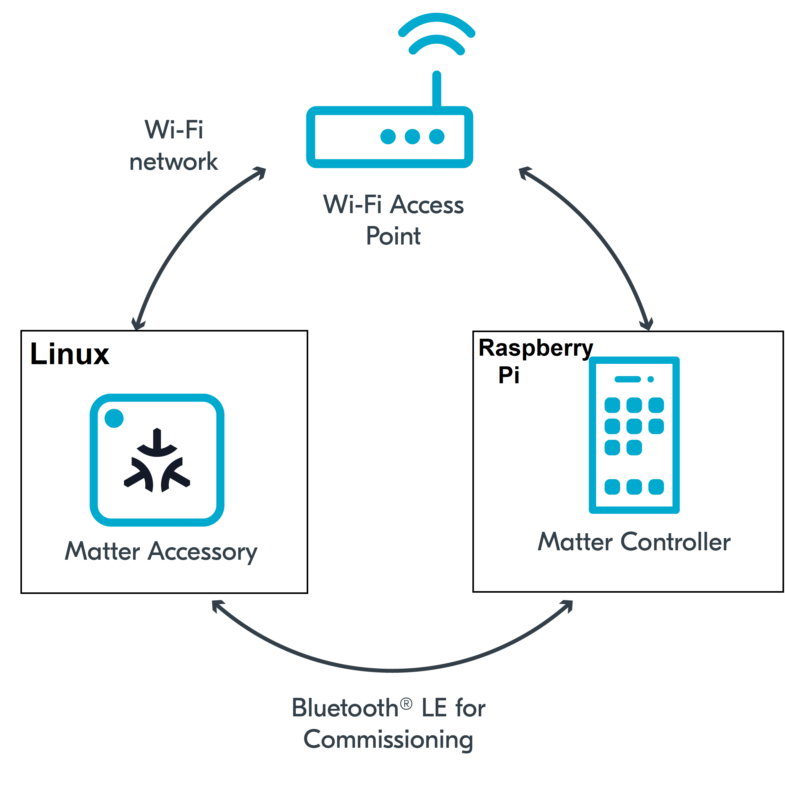
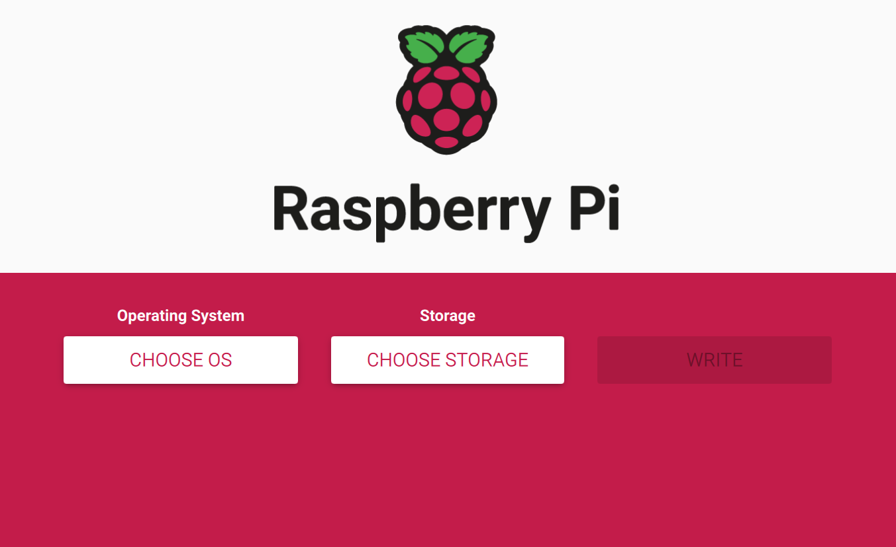
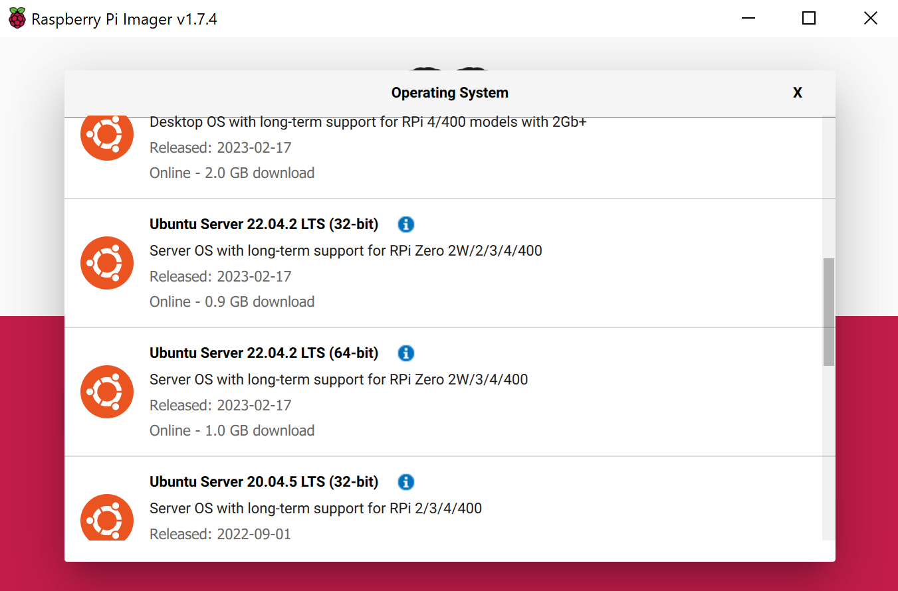
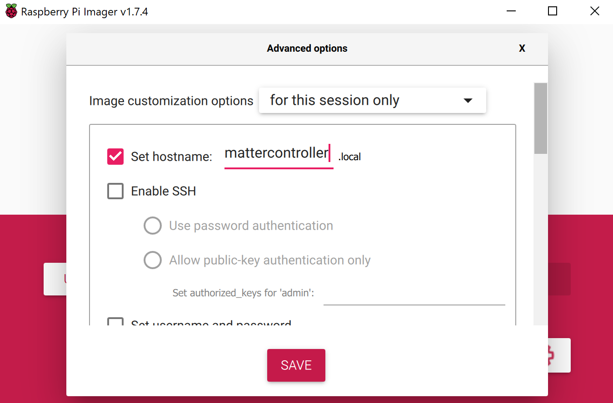

In this codelab we will show you how to build and install the Matter Controller on a Raspberry Pi.
In this codelab, you will:

in this CodeLab we will build the Matter Controller on a Raspberry Pi and we use this to controller a Matter Accessory that we set up previously on our Linux Host. This will allow us to create a multi admin Matter Network and we will learn how Matter fabrics work.
This set of Codelabs will use Ubuntu 22.04 on a Amd64 based architecture. If you are using Mac OS then you should follow the instructions directly from the Matter repo
You will need
Ubuntu 22.04The total codelab will take approximately a Duration of 30 minuates to complete.
We will be using the RPImager tool which is available on the Raspberry Pi Software Page


settings cog to open the advanced settings
You can use whatever settings to meet your requirements, however, you will need to remember the hostname so please write this down and make sure its unique on your network.
Also, in future codelabs we will be making us of the user account that you create so I recommend that you set
mattercontroller.localggc_user.You can use whatever password matches your security needs.
Enter your wifi network credentials. These should be for the same wifi network that you Linux host that you set up in a previous codelab that is running the Matter Sample app.
After the SD card has been written, transfer it to your Raspberry Pi and power up your Pi
You should be able to discover your RPi using its hostname
ssh ggc_user@mattercontroller.local
If, like me, you are using Windows Subsystem for Linux or for some reason your router is blocking mDNS broadcast you can find the IP address of your RPi using nmap on your local network ip subnet sudo nmap -p 22 192.168.0.0/24
ssh ggc_user@IPADDRESSHERE
sudo apt-get update
sudo apt-get upgrade
If you are using a Raspberry Pi 3 (RPI 4s are hard to come by!) then you may want to add some swap space as the code compilation required to build the matter library may push the RPI3 to its limits. The RPI 3 is limited in RAM space so having some Swap space may help prevent the dreaded hanging!
sudo fallocate -l 500M /swapfile1
ls -lh /swapfile1
sudo chmod 600 /swapfile1
sudo mkswap /swapfile1
sudo swapon /swapfile1
sudo swapon --show
free -h
sudo cp /etc/fstab /etc/fstab.bak
echo '/swapfile1 none swap sw 0 0' | sudo tee -a /etc/fstab
The official matter github repo is the ConnectedHomeIP repo from Project Chip
mkdir ~/Projects
cd ~/Projects
git clone https://github.com/project-chip/connectedhomeip.git
cd connectedhomeip
#git checkout tags/v1.1.0.1 #We try to keep to main tags (see releases)
./scripts/checkout_submodules.py --allow-changing-global-git-config --shallow --platform linux
Note: this process can take a while the very 1st time you install matter.
Before building our Matter controller and sample app, we need to install a few OS specific dependencies.
sudo apt-get install git gcc g++ pkg-config libssl-dev libdbus-1-dev \
libglib2.0-dev libavahi-client-dev ninja-build python3-venv python3-dev \
python3-pip unzip libgirepository1.0-dev libcairo2-dev libreadline-dev
Note: this process can take a while the very 1st time when you install matter.
sudo apt-get install pi-bluetooth avahi-utils
sudo apt-get clean
By default, wpa_supplicant is not allowed to update (overwrite) configuration. If you want the Matter application to be able to store the configuration changes permanently, you need to make the following changes:
Edit the dbus-fi.w1.wpa_supplicant1.service file to use configuration file instead by running the following command:
sudo nano /etc/systemd/system/dbus-fi.w1.wpa_supplicant1.service
Run the following command to change the wpa_supplicant start parameters to the provided values:
ExecStart=/sbin/wpa_supplicant -u -s -i wlan0 -c /etc/wpa_supplicant/wpa_supplicant.conf
Add the wpa-supplicant configuration file by running the following command:
sudo nano /etc/wpa_supplicant/wpa_supplicant.conf
Add the following content to the wpa-supplicant file:
ctrl_interface=DIR=/run/wpa_supplicantupdate_config=1
Finally, reboot your Raspberry Pi and log back in again.
Before building any matter app or controller we will need to create and initialise the environment
Run the following commands
cd ~/Projects/connectedhomeip
source scripts/activate.sh
If everything has gone ok with the environment setup you should see:
Checking the environment:
20250506 13:25:40 INF Environment passes all checks!
Environment looks good, you are ready to go!
gn gen out/chiptool_arm64_release --args='chip_mdns="platform" chip_inet_config_enable_ipv4=false chip_detail_logging=false symbol_level=0'
ninja -C out/chiptool_arm64_release chip-tool
Note: if using a Raspberry Pi 3 you can use the flag -j 1 in the ninja command to limit multi tasking the build across multiple cores. This can help prevent hangs.
out directory using the following commandsmv out/chiptool_arm64_release/chip-tool out/chip-tool \
&& rm -rf out/chiptool_arm64_release
chip-toolin the out/ directorycd out/
ls -al
Note: if you run the chip-tool ensure that you clean up some of the temporary files using rm -rf /tmp/chip* as its a good habit to remove these after every time you test.
In this section we will run a sample matter accessory application (all-clusters-app) and control with an administrative tool called the chip-tool that acts as a matter controller.
Firstly we will check if the CHIP Tool runs correctly. Execute the following command in the connectedhomeip directory:
./out/chip-tool
As a result, the CHIP Tool will print all available commands. These are called clusters in this context, but not all listed commands correspond to the clusters in the Data Model (for example, pairing or discover commands).
rm -fr /tmp/chip_*
Note: removing the /tmp/chip* files can sometimes clear up unexpected behaviours.
./out/chip-tool pairing ble-wifi ${NODE_ID_TO_ASSIGN} ${SSID} ${PASSWORD} 20202021 3840
If everything is working you should see output logs and you should see that the commissioning was successful
[1683309736.149316][15:17] CHIP:CTL: Successfully finished commissioning step 'Cleanup'
[1683309736.149405][15:17] CHIP:TOO: Device commissioning completed with success
3.1. Troubleshooting issues
Make sure you are able to see a bluetooth device using;
hcitool dev
Note: if you are having problems finding a bluetooth device. Then you can try this:
sudo apt-get dist-upgrade -y
sudo apt-get install pi-bluetooth
There is also a known bug when a Raspberry Pi is using both Wifi and Etho adapters. Bring the Wifo adapter down using this command:
sudo ip link set dev wlan0 down
In the same shell window, we will read the vendor-name of the Matter accessory using the following command:
./out/chip-tool basicinformation read vendor-name 1 0
In the output logs, you should see that the Vendor Name
[1682445848.220725][5128:5130] CHIP:TOO: VendorName: TEST_VENDOR
./out/chip-tool basicinformation read product-name 1 0
./out/chip-tool basicinformation read software-version 1 0
We are using the Basic Information cluster. Clusters are logical groupings of Matter functionality.
./out/chip-tool generaldiagnostics read up-time 1 0
In the output logs, you should see the UpTime
[1682446010.495854][5286:5288] CHIP:TOO: UpTime: 1008
./out/chip-tool
You should stop the chip-all-clusters-app process by using Ctrl-C in the first shell window.
It also a great habit to clean up the temporary files after you finish testing by using this command:
rm -fr /tmp/chip_*
Note: removing the /tmp/chip* files can sometimes clear up unexpected behaviours.
Checkout the official documentation here: Project Chip - ConnectedHomeIp